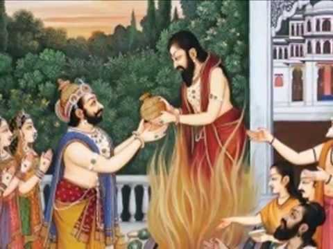
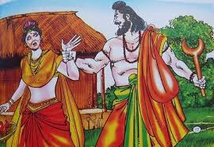

Introduction
Traditionally, the Ramayana is attributed to Valmiki, regarded as India's first poet. The
names of the characters (Rama, Sita, Dasharatha, Janaka, Vasishta, Vishwaamitra) are all
known in late Vedic literature, older than the Valmiki Ramayana.
The 7 Kandas or Books
The 7 Kandas or Books
The Epic is traditionally divided into several major kandas or books, that deal chronologically
with the major events in the life of Rama—Bala Kaanda, Ayodhya Kaanda, Aranya Kaanda,
Kishkindhaa Kaanda, Sundara Kaanda, Yuddha Kaanda, and Uttara Kaanda.
The division into 7 kandas is as follows:
- Bala Kaanda
- Ayodhya Kaanda
- Aaranya Kaanda
- Kishkinda Kaanda
- Sundara Kaanda
- Yudha Kaanda
- Uthara Kaanda
1. Bala Kaanda
Bala Kaanda (book of childhood) -- It relates the divine birth of Shri Rama, Bharata,
Lakshmana and Satrughana, born to King Dasharatha of Ayodhya , destined to fight demons.
Sita's swayamvara and subsequent wedding to Rama. and in the end his encounter with
Parashuraama.
The birth of the four sons of Dasharatha

Dasharatha was the king of Ayodhya. He had three queens and they are Kausalya, Kaikeyi
and Sumitra. He was childless for a long time and, anxious to produce an heir, he performs a
fire sacrifice known as Putra-Kameshti Yagya.As a consequence, Rama is first born to
Kausalya, Bharata is born to Kaikeyi, and Lakshmana and Shatrughna are born to
Sumitra.These sons are endowed, to various degrees, with the essence of the God Vishnu;
Vishnu had opted to be born into mortality in order to combat the demon Ravana, who was
oppressing the Gods, and who could only be destroyed by a mortal.The boys are reared as the
princes of the realm, receiving instructions from the scriptures and in warfare. When Rama is
16 years old, the sage Vishwamitra comes to the court of Dasharatha in search of help against
demons, who were disturbing sacrificial rites. He chooses Rama, who is followed by
Lakshmana, his constant companion throughout the story. Rama and Lakshmana receive
instructions and supernatural weapons from Vishwamitra, and proceed to destroy the demons.
Janaka was the king of Mithila. One day, a female child was found in the field by the king in
the deep furrow dug by his plough. Overwhelmed with joy, the king regarded the child as a
"miraculous gift of God". The child was named Sita, the Sanskrit word for furrow. Sita grew
up to be a girl of unparalleled beauty and charm. When Sita was of marriageable age, the
king decided to have a swayamvara which included a contest.
Overwhelmed with joy, the king regarded the child as a
"miraculous gift of God". The child was named Sita, the Sanskrit word for furrow. Sita grew
up to be a girl of unparalleled beauty and charm. When Sita was of marriageable age, the
king decided to have a swayamvara which included a contest. The king was in possession of
an immensely heavy bow, presented to him by the God Shiva saying-- whoever could wield
the bow could marry Sita. The sage Vishwamitra attends the swayamvara with Rama and
Lakshmana. Only Rama wields the bow and breaks it. Marriages are arranged between the
sons of Dasharatha and daughters of Janaka. Rama gets married to Sita, Lakshmana to
Urmila, Bharata to Mandavi and Shatrughan to Shrutakirti. The weddings are celebrated with
great festivity at Mithila and the marriage party returns to Ayodhya.
2. Ayodhya Kaanda :

Ayodhya Kaanda (book of Ayodhya) narrates the preparation for the coronation of Shri
Rama, the intrigue that leads to his forest exile, -- the regency of Bharata, Bharata’s search
for Shri Rama, the meeting of the brothers and Bharata’s return to Ayodhya with Shri Rama’s
sandals.
After Rama and Sita have been married for twelve years, an elderly Dasharatha expresses his
desire to crown Rama, to which the Kosala assembly and his subjects express their support.
On the eve of the great event, Kaikeyi—her jealousy aroused by Manthara,
a wicked maidservant—claims two boons that Dasharatha had long ago granted her. Kaikeyi demands
Rama to be exiled into wilderness for fourteen years, while the succession passes to her son
Bharata. The heartbroken king, constrained by his rigid devotion to his given word, accedes
to Kaikeyi's demands. Rama accepts his father's reluctant decree with absolute submission
and calm self-control which characterizes him throughout the story. He is joined by Sita
and Lakshmana. When he asks Sita not to follow him, she says, "the forest where you dwell
is Ayodhya for me and Ayodhya without you is a veritable hell for me." After Rama's
departure, king Dasharatha, unable to bear the grief, passes away. Meanwhile, Bharata who
was on a visit to his maternal uncle, learns about the events in Ayodhya. Bharata refuses to
profit from his mother's wicked scheming and visits Rama in the forest. He requests Rama to
return and rule. But Rama, determined to carry out his father's orders to the letter,
refuses to return before the period of exile. However, Bharata carries Rama's sandals, and
keeps them on the throne, while he rules as Rama's regent.
3. Aaranya Kanda :

Aranya Kaanda (book of the forest) -- The forest life of Rama with Sita and Lakshmana, his
constant companion. Shri Rama, Sita and Lakshmana, met Shurpanakhaa, killings of Khara
and Dushana by Shri Rama, kidnapping of Sita by Ravana, Jatayu (slain by Ravana) dying on
the lap of Shri Rama and meeting with Kabandhu and Shabari.
Rama, Sita and Lakshmana journeyed southward along the banks of river Godavari, where
they built cottages and lived off the land. At the Panchavati forest they are visited by a
rakshasa woman, Surpanakha, the sister of Ravana. She attempts to seduce the brothers and,
failing in this, attempts to kill Sita. Lakshmana stops her by cutting off her nose and ears.
Hearing of this, her demon brother, Khara, organizes an attack against the princes. Rama
annihilates Khara and his demons.
When news of these events reaches Ravana, he resolves to destroy Rama by capturing Sita
with the aid of the rakshasa Maricha. Maricha, assuming the form of a golden deer, captivates
Sita's attention. Entranced by the beauty of the deer, Sita pleads with Rama to capture it. Lord
Rama, aware that this is the play of the demons, is unable to dissuade Sita from her desire and
chases the deer into the forest, leaving Sita under Lakshmana's guard. After some time Sita
hears Rama calling out to her; afraid for his life she insists that Lakshmana rush to his aid.
Lakshmana tries to assure her that Rama is invincible, and that it is best if he continues to
follow Rama's orders to protect her. On the verge of hysterics Sita insists that it is not she but
Rama who needs Lakshmana's help. He obeys her wish but stipulates that she is not to leave
the cottage or entertain any strangers. He draws a chalk outline, the Lakshmana rekha around
the cottage and casts a spell on it that prevents anyone from entering the boundary but allows
people to exit. Finally with the coast clear, Ravana appears in the guise of an ascetic
requesting Sita's hospitality. Unaware of the devious plan of her guest, Sita is tricked
into leaving the rekha and then forcibly carried away by the evil Ravana.
Jatayu, a vulture, tries to rescue Sita, but is mortally wounded. At Lanka, Sita is kept under
the heavy guard of rakshasis. Ravana demands Sita marry him, but Sita, eternally devoted to
Rama, refuses.Rama and Lakshmana learn about Sita's abduction from Jatayu, and
immediately set out to save her. During their search, they meet the demon Kabandha and the
ascetic Shabari, who direct them towards Sugreeva and Hanuman.